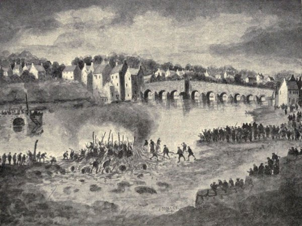
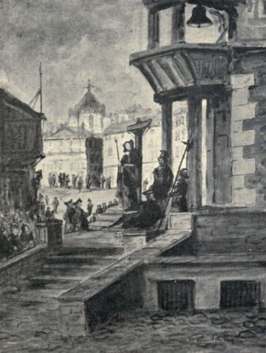
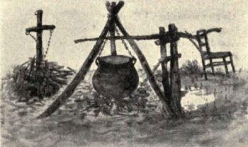

The Procurator-Fiscal concluded his Proof, and the Steward-Depute remitted the Cause to the Verdict of the Assize.
The persons that passed upon the Assize of the said Jean Maxwell, returned their Verdict to the Court; and the tenor thereof is as follows:—
“At Kirkcudbright, the 21st day of June, 1805, the Assize being enclosed, did make choice of Alexander Melville of Barwhar to be their Chancellor, and William Mure, Factor for the Earl of Selkirk, to be their Clerk; and having considered the Indictment raised at the instance of Robert Gordon, Writer in Kirkcudbright, Procurator-Fiscal of Court for His Majesty’s interest, against Jean Maxwell, present Prisoner in the Tolbooth of Kirkcudbright, the Pannel, with the Interlocutor of the Steward-Depute of the Stewartry of Kirkcudbright thereon, and the whole Proof adduced, they Unanimously Find the said Jean Maxwell Guilty of the Crimes charged against her in the said Indictment. In Testimony, whereof, &c.
(Signed) Alexr. Melville, Chancellor.
(" ) Will. Mure, Clerk.”
(Court adjourned for a week.)
“Kirkcudbright, 28th June, 1805.
“The Steward-Depute having considered the Verdict of the Assize, bearing date the twenty-first day of June current, and returned into Court that day against Jean Maxwell, the Pannel, whereby she is found guilty of pretending to exercise WITCHCRAFT, SORCERY, INCHANTMENT, and CONJURATION, and of undertaking to tell fortunes, contrary to the Enactments and Provisions of the Act of Parliament passed in the 5th year of the Reign of King George the Second, Chapter fifth, in the manner charged against her in the Indictment, at instance of the Procurator-Fiscal of Court; the Steward Depute, in respect of the said Verdict, Decerns and Adjudges the said Jean Maxwell to be carried back from the Bar to the Tolbooth of Kirkcudbright, and to be Imprisoned therein for the space of One Whole Year, without Bail or Mainprize; and Once in every Quarter of the said year to stand openly upon a Market day in the Jugs or Pillory, at the Market Cross of the Burgh of Kirkcudbright, for the space of One Hour, &c.—(Signed) Alexr. Gordon.”
It only remains to be added that this sentence was rigorously carried out.
A small, and now scarce volume, containing a full account of the trial, was published at Kirkcudbright the same year, of which the following is a copy of the title-page:—
REMARKABLE TRIAL
OF
JEAN MAXWELL
THE
Galloway Sorceress:
Which took place at Kirkcudbright
on the twenty-eighth day of June last,
1805:
For Pretending to Exercise
WITCHCRAFT, SORCERY, INCHANTMENT,
CONJURATION, etc.
| “And that distilled by Magic slights Shall raise such artificial sprights, As by the strength of their illusion Shall draw him on to his confusion.” —Macbeth. |
KIRKCUDBRIGHT:
Printed by Alexander Gordon.
1805.
Proceedings in Dumfriesshire.
Concerning Dumfriesshire there falls to be recorded numerous instances of accusation and trial, which includes the ever-to-be-regretted consummation of fanaticism in this district—the burning of nine unhappy women on the Sands of Dumfries in the year 1659.
Burgh of Dumfries.
Extract from the Dumfries Burgh Treasurer’s Books, May 27th, 1657.—Detailed items of expenditure incurred at the burning of two women convicted of witchcraft: “For 38 load of peitts to burn the two women, £3 12s (Scots). Mair, given to William Edgar for ane tar barrell, 12s; for ane herring barrell, 14s. Given to John Shotrick, for carrying the twa barrells to the pledge (house), 6s. Mair, given to the four officers that day that the whiches was burnt, at the provest and bayillis command, 24s. Given to Thomas Anderson for the two stoups and the two steaves (to which the women were tied), 30s.”(36)
Resolution of Kirk-Session of Dumfries, 1658.—The Kirk-Session of Dumfries, after solemn deliberation on the subject, required the minister to announce from the pulpit that all persons having evidence to give against such as were under suspicion of “the heinous and abominable sin of witchcraft,” should be ready to furnish the same to the Session without delay; and at their next meeting the elders wisely qualified the order, by resolving that anyone who charged another with being guilty of “sic devilisch practises,” without due reason, should be visited with the severest discipline of the Kirk.(37)
Official Information regarding the burning of the nine women on the Sands of Dumfries, 13th April, 1659.
These women were first strangled and then burned. The following particulars were gleaned from the books of the High Court of Justiciary kept at the Register House, Edinburgh:—
1659.—The Court was opened at Dumfries on the 2nd of April, in the above year, by the “Commissioners in Criminal Cases to the people in Scotland,” Judge Mosley and Judge Lawrence; and that ten women, each charged with divers acts of witchcraft, were brought before them for trial. The proceedings appear to have lasted until the 5th. One of the accused, Helen Tait, had a rather narrow escape—the jury finding by a plurality of voices that the “dittay” in her case was “not cleirly proven.” Nevertheless, before being dismissed from the bar, she was required to find security to the extent of £50 sterling for her good behaviour, and that she would banish herself from the parish. The nine other unfortunates were all convicted, as is shown by the subjoined minute, giving the finding of the jury and the deliverance of the judge, as pronounced by the official dempster, “F. Goyyen”:—(38)
“Drumfreis, the 5th of Apryle, 1659.—The Commissioners adjudges Agnes Comenes, Janet M‘Gowane, Jean Tomson, Margt. Clerk, Janet M‘Kendrig, Agnes Clerk, Janet Corsane, Helen Moorhead, and Janet Callon, as found guilty of the severall articles of witchcraft mentioned in the dittayes, to be tane upon Wednesday come eight days to the ordinar place of execution for the burghe of Drumfreis, and ther, betuing 2 and 4 hours of the afternoon, to be strangled at staikes till they be dead, and therefter ther bodyes to be burned to ashes, and all ther moveable goods to be esheite. Further, it is ordained that Helen Moorhead’s moveables be intromitted with by the Shereff of Nithsdaile, to seize upon and herrie the samin for the King’s use.”(39)

The Burning of the Nine Women on the Sands of Dumfries, April 13th, 1659.
(Sketch by J. Copland, Dundrennan.)
Resolution of the Dumfries Presbytery regarding the attendance of clergymen before the carrying out of the sentence, and at the actual “burning” of the women, on the Sands:—
“5th April, 1659.
“The Presbytery have appoynted Mr Hugh Henrison, Mr Wm. M‘Gore, Mr George Campbell, Mr John Brown, Mr Jo. Welsh, Mr George Johnston, Mr Wm. Hay, and Mr Gabriel Semple, to attend the nine witches, and that they tak thair own convenient opportunity to confer with them; also that they be assisting to the brethren of Dumfries and Galloway the day of the Execution.”(40)
Dumfries, 14th November, 1664.—An edict from the Town Council: “The Counsall being informed that Janet Burnes, commonly reputed a witche, and quho hath bein banished out of severall burghis, and put out of this burgh in the month of August last, for cheating the people upon pretence of knowledge of all things done by them in tym past, or that may fall out in tym cuming, with certification to be scurgit if ever she was sein within the burgh theireafter; and being well informed that she was sein within the town on Saturday, they have ordaint that intimation be made by touk of drum, that non of the inhabitants resset or give meit or drink unto the said Janet Burnes.”(41)
Court of Justiciary, Tolbooth of Dumfries, May 18th, 1671.—Warrant for the execution of two alleged witches: “Magistrates of Drumfreis, Forasmuch as in ane Court of Justiciarie, holden be us within the Tolbuthe of Drumfreis, upon the fyftein day of May instant, Janet Muldritche, and Elspeth Thomsone, now found guiltie be ane assyze of the severall articles of witchcraft specified in the verdict given against them thereanent, were decerned and adjudged be us, The Lords Commissioners of Justiciary, to be tane upon Thursday next, the eighteen day of May instant, betwixt two and four houres in the afternoune, to (the) ordinare place of executione, for the toune of Drumfreis, and there to be worried at ane stake till they be dead; and theirafter their bodies to be burnt to ashes, and all their moveable goods and geir to be escheit. You shall thairfoir cause put the said sentence to due executione, whereanent their presents shall be your warrand. Given at Drumfreis the sixteen day of May, 1671.”(42)
Court of Justiciary, Dumfries, 1709.—Last trial for witchcraft in Scotland: The accused was named Elspeth Rule; the indictment against her being that she was by habit and repute a witch, and had used threatening expressions towards persons at enmity with her, who, in consequence of such menace, suffered from the death of friends or the loss of cattle, while one of them became mad.
The jury by a majority of votes found the charges proven; and the judge condemned the prisoner to be burned upon the cheek with a hot iron and banished for life. It is told how, when this brutal act of branding the cheek was being carried out, smoke was seen issuing from the poor woman’s mouth.(43)
Dumfries and Major Weir, the notorious Edinburgh warlock—a slight connecting link with Dumfries.
In his more youthful days Major Weir led an active military life, serving as an officer in the Puritan Army during the Civil War (1641). In the Registers of the Estates under March 3rd, 1647, reference is made to a supplication by Major Thomas Weir, asking “that the Parliament wald ordain John Acheson, Keeper of the Magazine, to re-deliver to the supplicant the band given by him to the said John upon the receipt of are thousand weight of poulder, two thousand weight of match, and an thousand weight of ball, sent with the supplicant to Dumfries for furnishing that part of the country.”
Presbytery of Dumfries (Southern District), March, 1692.—Marion Dickson in Blackshaw, Isobel Dickson in Locherwood, Agnes Dickson (daughter of Isobel), and Marion Herbertson in Mouswaldbank, had for a long time been “suspected of the abominable and horrid crime of witchcraft,” and were believed to have “committed many grievous malefices upon several persons their neighbours and others.” It was declared to be damnifying “to all good men and women living in the country thereabouts, who cannot assure themselves of safety of their lives by such frequent malefices as they commit.”
Under these circumstances, James Fraid, John Martin, William Nicolson, and Thomas Jaffrey in Blackshaw, John Dickson in Slop of Locherwoods, John Dickson in Locherwoods, and John Dickson in Overton of Locherwoods, took it upon them to apprehend the women, and carried them to be imprisoned at Dumfries by the sheriff, which, however, the sheriff did not consent to till after the six men had granted a bond engaging to prosecute. Fortified with a certificate from the Presbytery of Dumfries, who were “fully convinced of the guilt (of the women), and of the many malefices committed by them,” the men applied to the Privy Council for a commission to try the delinquents.
The Lords ordered the women to be transported to Edinburgh for trial.(44)
Kirk-Session of Caerlaverock.—Charge of alleged divination brought at their instance, before the Dumfries Presbytery, 22nd March, 1697: “Compeared John Fergusson in Woodbarns, who acknowledged his scandalous carriage in charming and turning the key at Bankend conform to the accusation, but says he knew not there was any evil in it. The Presbytery appoint him to stand on the pillar in the church of Caerlaverock, and be sharply rebuked for his scandalous practice and recommends him to the magistrates to be secured till he give bail to answer and satisfy conform to this act.”
The actual circumstance connected with this charge of alleged divination are briefly as follows:—About the middle of January, 1697, two men returning from Dumfries entered the tavern of William Nairns at Bankend of Caerlaverock. These were John Fergusson of Woodbarns, Cummertrees, and William Richardson, Cummertreestown. On leaving the inn Richardson discovered that a sack of provisions had been taken from the saddle of his horse which had been tied to a ring at the door. Entering the house, he made known his loss, declaiming loudly against the thief. In the utmost sympathy with his friend’s loss, Fergusson declared he could soon find out who the thief was, and called out that two Bibles should be brought to him at once, to which the landlord stoutly demurred; but Fergusson threatened that unless he got his own way he “would make bloody work among them,” and two Bibles were accordingly brought to the said John Fergusson, “who brought a key out of his pocket and put the one end of it within one Bible and the bowl end out, clasping the Bible upon it, and two holding the bowl of the key upon their fingers. The said John then read three verses of the 50th Psalm out of the second Bible, beginning always at the 18th verse, always naming a person before he began to read, till they came to William M‘Kinnell in the same town; and when they named him, and were reading the said Scripture, the key and the Bible turned about and fell on the table. This was done three times, as attested by James Tait, mason, who is quartered in Townhead; James Fergusson, servitor to George Maxwell of Isle; George Fergusson in Bankend; and William Nairns, in whose house it was done.”(45)
Extracts from Irongray Kirk-Session Records.
“September 24th, 1691.
“David Muirhead of Drumpark and his wife, being called before the Session and examined anent ane strife betwixt them and Janet Sinklar, submitted themselves to the will of the Session. Janet Sinklar also submitted to the will of the Session for saying that she doubted Drumpark’s wife of murder and witchcraft, and is appointed to receive publick rebuke before the congregation.”
“August 30, 1691.
“William Anderson in Hall of Forest, being called before the Session for bringing his child to a smith to be charmed with ane forge hammer, confessed his sin and received a rebuke before the Session.”
“November 13, 1692.
“John Charters in Barncleugh, being called before the Session as witness nominat by James Wright to prove witchcraft against Janet Kirk, denied that he knew anything of witchcraft in her. Margaret Smyth, wife of John Jonston, being called before the Session, declared in her hearing that Janet Kirk, being brought in to Elizabeth Jonston, being grievously tormented with sickness like to distraction, pronounced these words, that ‘if God had taken the health from her let Him given it again, and if the devil had taken it from her to give it her again.’ On which she was rebuked.”
“April 16th, 1693.
“Jean Stot (Ingleston) confessed before the Session that she blessed God if Jean Grier’s prayings had any pith that they lighted on a kow and not on a person, and did say that Jean Kirkpatrick did gather root grown briers on a Saboth day, and nominat Agnes Patton for a witness.”
The Session found “wrath and malice among the inhabitants of Ingleston,” and the minister was sent as peacemaker. “Jean Stot obeyed the minister and forgave Jean Grier, and also required forgiveness of her, which she refused till further advisement.”(46)
Parish of Irongray.—Traditional account of the sacrifice of a reputed witch by enclosing her in a tar-barrel, setting it alight, and rolling it into the Water of Cluden:—
“In the reign of James VI. of Scotland, or under the early Government of his son Charles, tradition tells of a woman that was burnt as a witch in the Parish of Irongray, about seven miles west from Dumfries. In a little mud-walled cottage, in the lower end of the Bishop’s Forest, and nigh the banks of the Water of Cluden, resided a poor widow woman, who earned her bread by spinning with a pole, and by weaving stockings from a clue of yarn depending from her bead-strings. She lived alone, and was frequently seen on a summer’s eve, sitting upon a jagged rock, which overhung the Routing burn, or gathering sticks, late in a November evening, among the rowan-tree roots, nigh the dells which signalise the sides of that romantic stream. She had also, sometimes, lying in her window a black-letter Bible, whose boards are covered with the skin of a fumart, and which had two very grotesque clasps of brass to close it with when she chose. Her lips were sometimes seen to be moving when she went to church, and she was observed to predict shower or sunshine at certain periods, which predictions often came to be realised....
“The Bishop of Galloway was repeatedly urged to punish this witch; and lest it should be reported to the king that he refused to punish witches, he at last caused her to be brought before him, nigh to the spot. She was rudely forced from her dwelling, and several neighbours of middle or of old age were cited to declare all the wicked things she had done.
“She was sentenced to be drowned in the Routing burn, but the crowd insisted that she should be shut up in a tar-barrel and hurled into the Cluden. Almost against the Bishop’s consent, this latter death was consummated. The wretched woman was enclosed in a barrel, fire was set to it, and it was rolled, in a blaze, into the waters of Cluden.
“Such, says the tradition of no very doubtful date, was the savage end of one who was reputed a witch. The spot where, ’tis said, the prelate sat, is yet called Bishop’s Butt. The well from which she drew the water for her domestic use, and where the young rustic belles washed their faces, still retains the name of the Witch’s Well; and a pool in the Cluden, nigh to the well, often bears the name of the Witch’s Pool. Even some rocks nigh to the Routing Bridge are still pointed out, where she was wont to sit; and a hollow into which, say some, she used to throw an elfin clue. That wood yet feathering the hill side west from Drumpark, always bears the name of the Bishop’s Forest; and the sylvan ravine, furrowed by a brawling brook, has been, by some now in their graves, named the Warlock’s Glen.”(47)
Parish of Closeburn.—Janet Fraser, called before the Presbytery of Dumfries, 1691. Her remarkable revelations:—
“The person is a young woman, unmarried, of the age of about twenty years, whose name is Jonet Fraser, or, as we in the south used to pronounce it, Frissel, who then lived, and yet lives, with her father, Thomas Frissell, a weaver to his trade, a man of unblamed conversation, in the sheriffdome of Dumfries, in the countrey thereof called Nithisdale, and parochin of Closeburn, six miles, or thereby, from the town of Dumfriece.

“Penance.”
(Sketch by J. Copland, Dundrennan.)
“She is, and hath been for a long time, a person in the judgment of all that know her a serious Christian; and was for a good time before this befell her, more then ordinary exercised in private condition with God, as the relation after-specified gives the reader a little touch.
“She can read print, but cannot write herself; but whatever she saw in vision, was at times able to give ane exact account of it, after all was over; and accordingly did give the relation following to some creditable gentlemen, and some country people, her acquaintance:—
“The time of my exercise was eight years, and all this time was troubled with the appearance of a thing like a bee, and other times like a black man, and that also at severall times, and in severall places.
“Then at the end of the eight year, I being at prayer, the black man did appear as at other times, he being upon the one side of me, and there appearing upon the other side a bonny hand and a rod in it, and the rod was budding; and I said, ‘Is that Thy hand and Thy rod, O Lord?’ And I was content to embrace the one, and flee the other. Then, upon that night eight nights, I was coming home near hand unto my dwelling, I grew very drowsie, and fell asleep, and there was a voice said to me, ‘Awake, why sleepest thou?’ And there was lightning round about me; and I looking up to the top of a bush that was at my hand, there was the shape of a dove that went alongst with me in company to the house.
“Then, about three quarters of a year thereafter, the rod appeared again to be a double rod, or a rod that was springing and forthcoming, and after that time I was never troubled with the black man any more.”
Her first revelation was on the 4th of June, 1684, but it is very difficult to make out what her visions portended:—“On the 5th day of November, 1684, I being at prayer, there appeared unto me, in a bodily shape, three persons (as to my sight all in white), and they goe round about me the way the sun goeth; their coming was still after one manner, when I was at my duty, only I discern he that spoke first at one time, spoke first at all times, and so continued to speak by course, with Scripture notes, naming books, chapter, and verse—sometimes all the verse, sometimes a part.”
She was greatly concerned about the suffering remnant, and had many mysterious responses as to that. This intercourse with spirits continued for some years, and is very circumstantially detailed in the MS., at the conclusion of which is this additional miracle:—
“Besides what the reader has had formerly, he has likewise this following account of a passage that befell this holy woman, the 1st May, 1687, which was Sunday. This Jonet Frazer, and a young lass, a sister daughter of hers, about 17 or 18 years of age, having gone out into the fields, and both of them lying down on the grass near the water of Nith, which is but a bow-draught from her father’s house, and both of them reading their Bibles, and lying about the distance of four yards the one from the other, this Jonet Frazer is taken with a great drouth, and goes to the water of Nith to take a drink, leaving her Bible open at the place where she was reading, which was the 34th chap. of Esaiah, from verse 5 to 11, inclusive, which begins—‘For my sword shall be bathed in heaven; behold it shall come down on the people of Idumea, and upon the people of my curse, to judgment,’ etc. And when she had returned immediately as shoon as she could take a drink of water, she sees her Bible is coloured with bloud, as she thought, though afterwards, upon inspection and tryall it was not bloud, but red as bloud, and such as no person by the colour could discern from bloud; upon which she asks the other lass, ‘If any thing had been near her Bible?’ And she answered, ‘Nothing that she saw.’ She asks, ‘How could it then be that her Bible was covered over with bloud?’ Which both of them going near, found to be the very same place where Jonet was reading, viz., from verse 5 to 11, and some farther of the 34th chap., so as the print was not at all legible. The other lass would have her wipe off the blood, but she could not, but carried it as it was to her father, and a brother of hers, a godly young man, who is dead since, and some others, and did show it to them, who were curious to taste it, and it had a welsh taste, as if it had been some metear; the hens and birds would not pick it up.
“The very next Lord’s day, 8th May, this Jonet being in her father’s barn about ane hour alone, some little time before sunset, she came to the door of the barn to read, and while she was reading, about the 49th verse of Jeremiah, the like bloud did cover all that place which she was reading, viz., from the 46th verse to the 54th, as I remember, so thick as it marred all the print and made it unintelligible, nor did she ever perceive it fall down upon the book, or observe it till it did cover and spread over all that place; and it is to be remarked, she was standing within the door, the thatch of the barn being over her head and over the book that she was reading on, and that the bloud covered the print in the very time wherein she was reading, it spread over that part of it.
“The very next Sabbath thereafter, 15th of May, while she is again in that same barn, reading the 14th chap. of Revelations, the like bloud fell on the book, and covered all the chapter from the 9th verse to the end of the chapter, in the very act of the reading it, and which, she said, that she perceived it not, but about half ane inches distance from the book before it fell down upon it.
“The relater heirof is Maister Henry Maxwell, of Dalswinton, who dwells within two miles of the place where she dwells; saw the Bible, and the bloud upon all the three places of that Bible, which is still extant.
“It is not bloud, for it is as tough as glew, and will not be scrapped off by a knife as bloud will; but it is so like bloud as none can discern any difference by the colour.”
After this course of vision and bloody showers, Mrs Frazer, it would appear, fell under the suspicion of dealing with evil, in the place of good, spirits. For in the year 1691 she was called before the Presbytery and confessed: “That she pretended to prophecying and seeing of visions, and that she had sinned greatly in being deluded by Satin, causing her prophecie and see things future. Her book was appointed to be examined by two of the Presbytery; and on her second appearance she acknowledged that she was possessed by some evil spirit, and humbly besought the prayer of the ministers and of all others; upon which the further examination of herself and the witnesses was delayed. Nothing more is heard of her.”(48)
Records of Penpont Presbytery, 1706.
From January to March in the year 1706 the Presbytery of Penpont was occupied with the case of the Rev. Peter Rae, minister of Kirkbride. Mr Rae was slandered by a woman who alleged that he called her a “witch,” and when sick said to her, “They say you have my health, so give it again if you have it,” and also called her to come near hand him, and when she came he presently bled her on the “forrit” (forehead).
It was proved that Mr Rae did call her a witch, and did in his illness endeavour to draw blood from her brow, for which he was rebuked.
In 1737 Mr Rae was translated from Kirkbride (an extinct parish in Nithsdale now embraced in the parishes of Durisdeer and Sanquhar) and became minister of Kirkconnel. He was also clerk to the Presbytery of Penpont, before whom in earlier years he appeared. He is perhaps better known as the author of The History of the Late Rebellion[15] (1715). A man of outstanding ability, his memory is honoured by a mural tablet placed in the south wall of Kirkconnel church.
Glencairn Kirk-Session Records.
“Apryl nynth, 1694.”—Case of Margret M‘Kinch (not “M‘Onrick,” as given by Monteith,[16] p. 44). In the evidence it is stated that:
“Robert Muir in Dunregon came in to James Rodgerson’s hous, drew his knyf and offered to blood her abov ye b——” [paper torn—breath (?)].
“On Apryl nynth, 1694, Margt. M‘Kinch gave in an wrytten list of ye names who had sclandered her by calling her an witch, earnestly desiring ye Session to put the same to —— [proof(?)] that she myght be free from ye scandal.”
[Gap in the records, 1694-1700.]
10th September, 1704.—“Appoints yt it be publickly intimate upon Sabbath first that no Heritor, tennent, or Householder whatsomever within this paroch resett our harbour Jaunet Harestanes, sometime in Keir paroch, with certification.”
24th September, 1704.—“Appointment obeyed in makeing intimation anent Jaunet Harestanes, reputed to be under the mala-fama of witchcraft.”
14th November, 1707.—Case of Alexander Deuart (not “Douart” as given by Monteith, p. 44):—
Alex. Deuart, gardener, at Maxwelton, is charged with having “brought back some stolen goods by charm or enchantment or some other pretended ocult quality in herbs, along with some mutterings and gestures, as makes him so commonly reputed a charmer that he is sought unto by persons from divers corners of the country to the great scandal of religion. The said Alex. being interrogated primo—Did you bring back those things which was stolen from Maxwelton—aiz., six pair sheets, ten ——— [undecipherable], three aprons, at one time; a large silver tumbler at another time; and a book at a third time?
A. Yes; I was the causer, but had no hand in it myself.
Q. Did you not take money for the bringing of them back?
A. I told them I could do such things if it was not injurious to any, and told that he took money for the bringing of them back.
Q. How did you bring them back?
A. I cannot tell that, for I promised not to tell where I received my art.
Q. Did you make use of herbs as it is reported of you in order to the bringing of them back?
A. I did make use of herbs in part, but not for the bringing of them back.
Q. How did you make use of the herbs that you might know where they were?
A. I laid them under my head and dreamed of them.
Q. What are the herbs which had that effect upon your sleep?
A. I will not tell that to any living if they should saw me asunder.
Q. How came the cloaths back?
A. I must cause some brother of trade who dwells near hand them to tell them who have them that they must be brought back and they should not be wronged.
Q. Why did you not tell of the people who took away these cloaths, seeing thieves ought to be discovered for the good of the country?
A. It doth not belong to me to put out any man, otherwise I should be in eternity this day eight days.
Q. Did any person bring the things back, or how came they back?
A. I brought them not back, but the people who took them away brought them back.
Q. But how could the silver tumbler be brought back and put in a fast-locked room?
A. The person who took it flung it in at the window upon one of the shelves.
(Notandum—Now it was told him that all the windows were fast-snecked, as the servants who went in to take up the tumbler declared.)
Q. Did you not say when the tumbler was got, ‘I must have the hair that was in and about it, for it is the hair of a horse which belonged to a man who is shortly to be hanged for stealing?’
A. Yes.
Q. Did you not say to Sir Walter Laurie, ‘lock me ever so close in a room and I will cause all the cloaths that were taken away hang down upon the spouts of the tower upon the morrow morning?’
A. Yes.
Q. Did you not say before me, the Minister, ‘lock the cloaths again in as fast a room as you can, and I’ll cause them, for a little money, go all back in the place where they were?’
A. Yes.
Q. Why did you not bring back the silver spoon that was lost?
A. It was in Edinburgh, and the name was scraped out, and I could not bring it back until I went to Edinburgh.
Q. Why did you not bring back the mattock and other things?
A. It had been on fire.
Q. Why did you not bring back all the aprons, for there is one of them awanting yet?
A. I could not bring it back because it was burnt, and when a thing is hid beneath the ground or the like I can’t get wott of that.
Q. Did you not mutter some words when you used these charms?
A. Yes.
Q. What are they?
A. ‘Cloaths, cloaths, cloaths, and other things lost.’
Q. Whether did you use such charms afore Hallow-een as throwing nuts in the fire, sowing seeds up and down the house, and herbs to every corner, going backwards from the fire to the door, round the close backwards, up the stairs backward, and to your bed backward?
A. Yes.
Q. Being told by a Minister that from what he had heard there was either devolrie in it, or he was the thief himself. To which he replied, ‘I shall make it out to be no devolrie; or if it be devolrie, it is unknown to me.’
Q. Did you not bring back a book of Mrs Violet’s?
A. Yes.
Q. Did you not say you could cause any woman in London come down to you if but told her name?
A. I could do it, and I can.
Q. Did you not say in the presence of Sir Walter Laurie, Bailie Corbet in Dumfries, James Gordoun, Wryter, Yr., and me, that you could cause any of us dance naked?
A. I did, if you would take what I give you; and also added that he could cause any woman follow him if she would take what he would give her.
Q. Alexander, where learned you that art?
A. I learned it from the gardener at Arnistoun, now dead, but was at my brothering.
Q. But are there any alyve that was at your brothering?
A. No.
After all which, the Moderator said unto him: ‘Saunders, did you not say to me when I was poseing you privately about these things, and telling you that from all I had heard from you that I was convinced that you were either a thief or a devol?’ and you replied, ‘Pursue me, sir, before either Session or Presbytery, and I shall show that I am neither.’ And now, Saunders, after all these interrogatories are considered, I rather think you did take these things yourself, and therefore you can get no testificat (certificate) until your business be further cognosed upon.”
13th July, 21st Sept., and 26th Oct., 1712.—Complaint from Jean Howatson in Nies that Margaret Nivison in Crichen had called her “a witch and a resetter of witches.”
Both rebuked for their “scandelous and offensive expressions,” and “Injoyned to abstain from any such offensive carriage in time comeing, certifying withall that if they be found quarrolling with one another unjustly this process shall be revived again upon them.”
Indirect references affecting Durisdeer and Torthorwald.
Parish of Durisdeer.—In 1591 a member of the family of Douglas of Drumlanrig, “Barbara Naipar, spous to Archibald Douglas,” was accused of witchcraft and condemned to be burned on the Castle Hill of Edinburgh. Examination of the indictment shows that the charge was really implication in the crime by countenancing and seeking help from “users and abusers of witchcraft,” which, as we have seen, carried with it the extreme penalty.
The following is the extract from Pitcairn’s Criminal Trials:—
“May 8, 1591.—Barbara Naipar, spous to Archibald Douglas, burges of Edinburgh (brother to the Laird of Carschogill), Dilaitit of sindrie poyntis of witchcraft, contenit in Dittay gewin in against hir be Mr David M‘gill of Cranstoun—Rydell, advocat to our soverane lord.
“The Assyse, be the mouth of Robert Cuningham, chancillor, ffand, pronunceit, and declarit the said Barbara Naipar to be fylit, culpabill and convict of the seiking of consultation from Annie Sampsoune, ane wich, for the help of Dame Jeane Lyonne, Lady Angus, to keip hir from vomiting quhen sche was in breeding of barne. Item, for the consulting with the said Annie Sampsoune, for causing of the said Dame Jeane Lyonne, Lady Angus, to love hir, and to gif hir the geir awin hir agayne, and geiving of ane ring for this purpois to the said Anny, quhill sche had send her ane courchie (kerchief) of linning and swa for contravening of the Act of Parliament, in consulting with hir and seiking of hir help, being ane wich, &c.”
“Dome was pronunceit against Barbara Naipar, the sister-in-law of the Laird of Coshogle.”[17]
Torthorwald, 1596.—As Saul consulted the Witch of Endor, so in later days was the powers of witchcraft invoked by the most exalted to find out what fate or fortune the future held for them.
Of the wife of Captain James Stewart, Earl of Arran, it is told “that she got a response from the witches that she would be the greatest woman in Scotland, and that her husband should have the highest head in that kingdom. Both which fell out; for she died, being all swelled out in an extraordinary manner; and he, riding to the south, was pursued by the Lord Torthoral (called Douglas[18]), whose whole family the said Captain James intended to have extirpated, and was killed, and his head carried on the point of a spear and placed upon the battlements of Torthorwald Castle.”(49)

Fairies and Brownies.